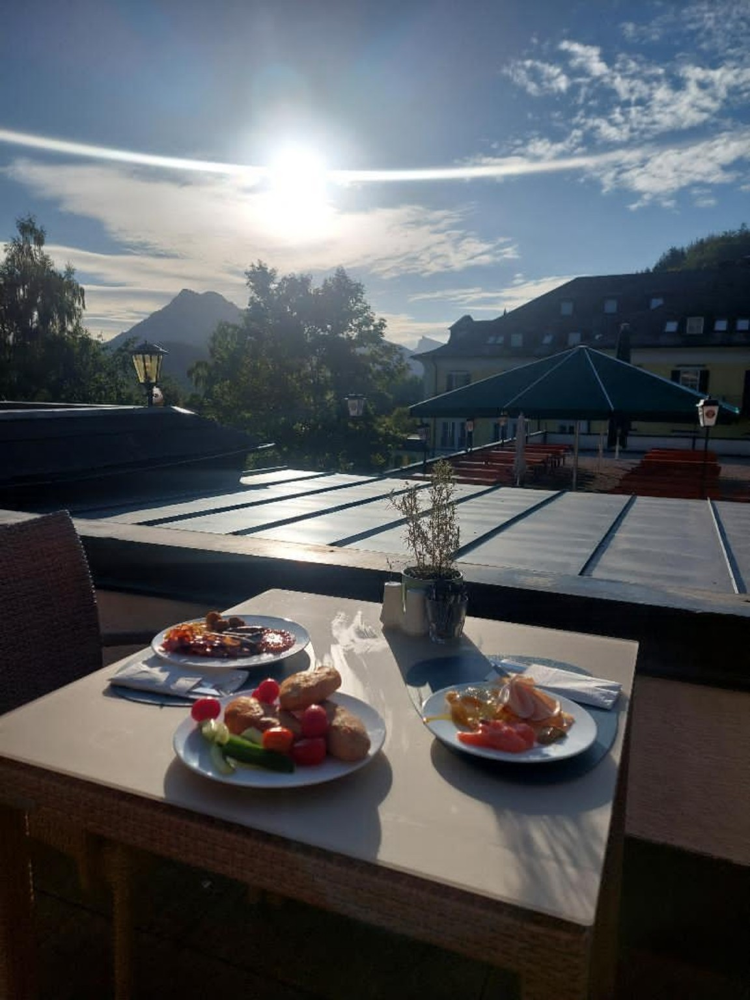

Schafberg / 1783 m n. m.
Druhý den jsme vstali a poctivě stihli snídani, na které byl obrovský výběr všemožných jídel.
A zároveň takový výhled, že kdyby byla Lucinka romantický typ, ze snídaně jdeme rovnou zpátky do postele.
Po snídani jsme vyrazili na zubačku směr vrchol Schafberg – 1783 metrů nad mořem.
Zaparkovali jsme asi minutu pěšky od zubačky, koupili lístky a vyrazili nahoru.
Dole a uvnitř zubačky bylo přibližně 40 °C, takže jsme vystoupili zpocení, jako kdybychom na vrchol opravdu šli pěšky.
Hned po vystoupení nám ale fouklo na záda něco, co pocitově připomínalo -20 °C, takže přišly na řadu mikiny.
Pak už následovalo jen pivo, klid a jeden z nejhezčích výhledů celého výletu.


Dvě piva. Jedna zubačka. Žádný záchod.
Cestou dolů nás čekal poměrně dramatický boj o to, aby sedačka pod Lucinkou zůstala suchá.
Slečna si totiž nahoře dala dvě piva a po tom druhém usoudila, že už není potřeba jít čůrat.
Poprvé jsem ji viděl ve skutečném stresu a snažil jsem se ji uklidňovat tím, že jsem mluvil úplně o všem možném, jen aby na svou situaci nemyslela. 🙂
Naštěstí se sedačka tepovat nemusela a spolucestujícím v zubačce nic na boty neteklo.
Mise splněna. ✓